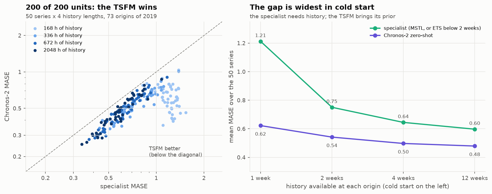
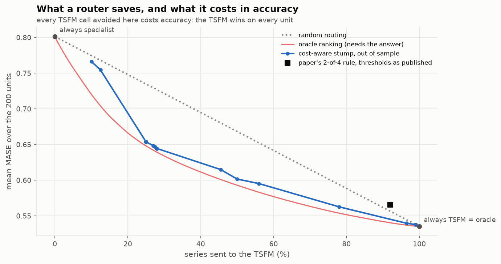
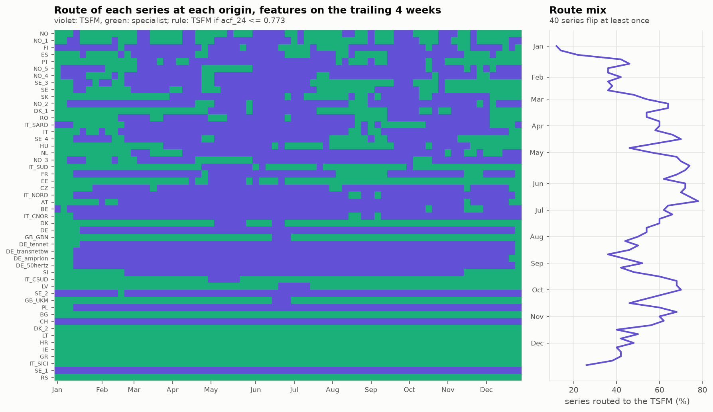
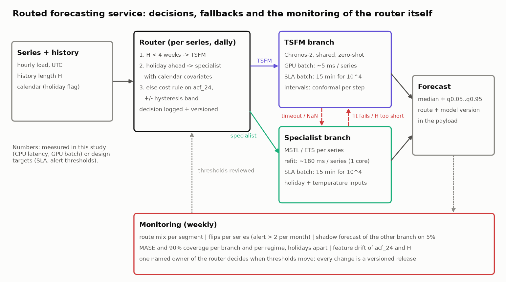

| specialist MASE | TSFM MASE | specialist cov90 | TSFM cov90 | |
|---|---|---|---|---|
| 1 week | 1.213 | 0.622 | 0.737 | 0.847 |
| 2 weeks | 0.751 | 0.542 | 0.615 | 0.838 |
| 4 weeks | 0.645 | 0.497 | 0.779 | 0.847 |
| 12 weeks | 0.597 | 0.479 | 0.849 | 0.85 |
3 · The Complexity Router, out of sample
50 load series, four history lengths, two branches
NoteIntuition
A router is a bet: for some series the shared zero-shot model is good enough, or better, and a dedicated model is a waste. For others, the dedicated model is worth its upkeep. The router is right if (a) such series exist and (b) it can recognise them before seeing the test period.
Do such series exist?

On load, no. Chronos-2 wins on all 200 units, by 5% to 70%. The gap is widest in cold start, where the specialist cannot see two weekly cycles and its intervals under-cover badly.
WarningWatch out: this is load against univariate specialists
The paper’s specialists are supervised models, and its “physical” regime is transformer oil temperature. A load specialist in production would have temperature and holiday inputs. This panel says nothing against such a specialist. It says that a univariate one refitted daily is beaten everywhere.
The pre-registered policies
| policy | mase | cov90 | share_tsfm | diff_vs_tsfm | diff_lo | diff_hi |
|---|---|---|---|---|---|---|
| always_specialist | 0.801 | 0.745 | 0 | 0.266 | 0.243 | 0.296 |
| always_tsfm | 0.535 | 0.846 | 1 | 0 | 0 | 0 |
| paper_rule | 0.566 | 0.833 | 0.92 | 0.03 | 0.014 | 0.056 |
| learned_stump | 0.535 | 0.846 | 1 | 0 | 0 | 0 |
| oracle | 0.535 | 0.846 | 1 | 0 | 0 | 0 |
The paper’s thresholds, applied as published, keep 8% of series on the specialist and lose 0.030 MASE. The stump learned leave-one-country-out never finds a better split than “always TSFM”.
What a cost-aware router buys

ImportantAn oracle is not a policy
The red curve sorts units by their realised gain: it is the best any router could do, and it needs the answer. The paper’s headline (0.970, a 70% cost cut) is such a curve. Out of sample, our stump stays within 0.015 MASE of it between 25% and 100% of TSFM calls. The paper’s rule sits above the random line.
And the cost itself: Chronos-2 takes about 95 ms per series on 4 CPU threads, or about 5 ms in a GPU batch. An MSTL refit takes 183 ms on one core. The paper’s assumed 1000x ratio describes a specialist that only predicts. A specialist that refits every day costs as much as the TSFM.
The router drifts

TipTakeaway
Re-evaluated every 5 days on the trailing 4 weeks, a cost-aware rule on acf_24 moves 40 of 50 series and swings the TSFM share from 12% to 78%. A ±0.05 hysteresis band cuts the flips from 323 to 78. A router is a model: it needs its own monitoring, its own owner and versioned thresholds.
The design

The 12-line reasoning the plan asks for is in 03_complexity_router/README.md.